k-Day 121｜找石人
早上八點就到公安局報到，辦理邊防證的單位十點才開門。
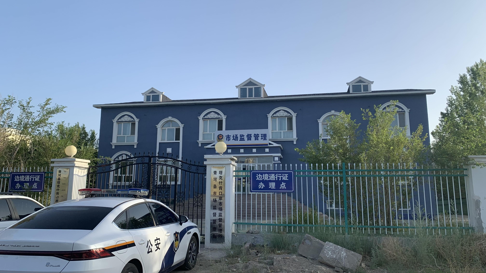
決定吃個早餐回酒店睡覺。
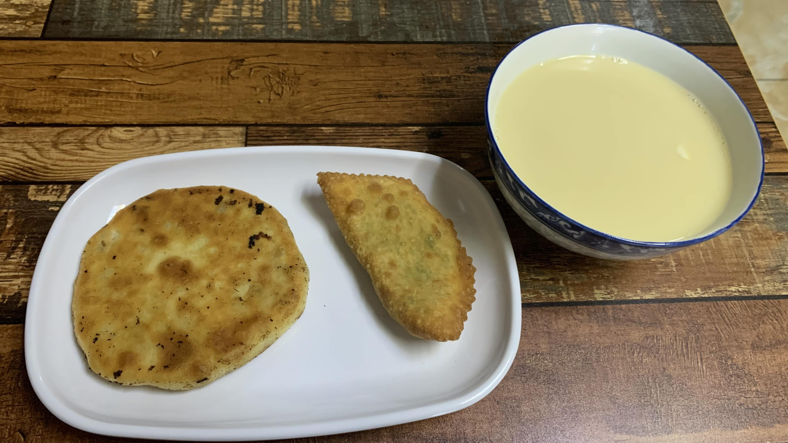
點了一碗奶茶、韭菜盒，以及一片肉餅。內餡又回到十分含蓄的用量，十分懷念大風天吃到的蒙古現做煎肉餅。
早上十點回到辦理通行證的單位，走出來和我接洽的公安卻跟我說台灣人帶著護照就可以。想必這資訊不太正確，和他說網上查到是需要邊防證的。但是我沒有微信不能辦，因此他給了我青河那邊的聯繫人電話，要我騎到那裡再辦理。
其實烏魯木齊該是往南的，這邊要多繞幾百公里。可我實在想至少看到一尊石人，因此選擇了北邊的山路。理想上先走查干郭勒，再往山區進入三道海子景區，沿著山路到青河之後轉216國道再往南走。
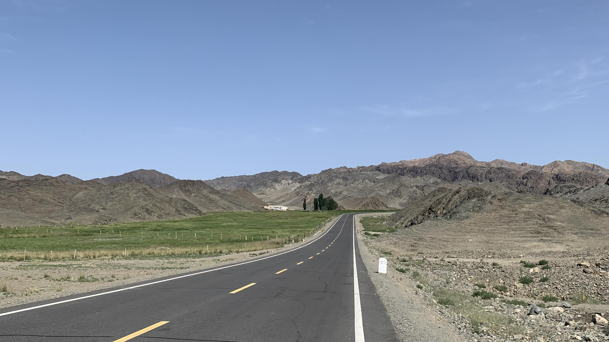
不得不說這柏油路鋪得真好，即便兩旁景色和國境北邊的蒙古差異不大，細節處卻充滿人味。也許是這個緣故，騎車時少了恐懼的感覺。
人類真是相當變態的生物，整個六月被逆風吹到想拔掉自己靈魂的我，面對眼前安全的場所竟產生少了一味的失落感。
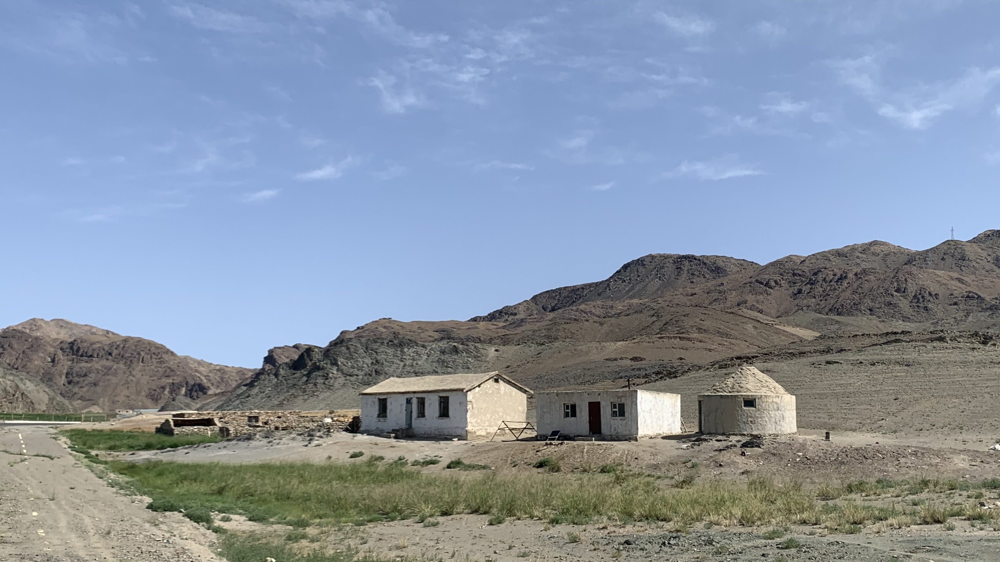
路旁的人造建築也變成刻板印象裡的新疆樣貌。
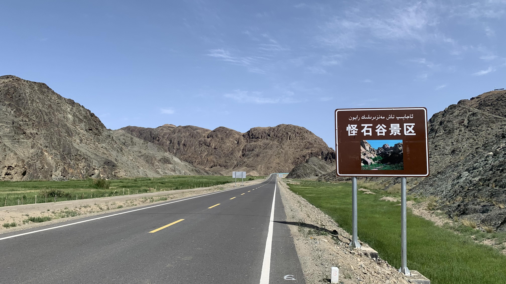
看到這告示牌有些不耐，同樣的山體、同樣的石頭，在蒙古的時候並沒有被定名，當然也沒有承載「景區」這種限定場所功能的義務。
而「怪石」的定義又是什麼？某個人類覺得石頭不該長成這樣，就把它們貼上「怪石」的標籤販賣獵奇心理？這和同志藝術家一定要在作品上畫裸體或彩虹的行為有何不同？
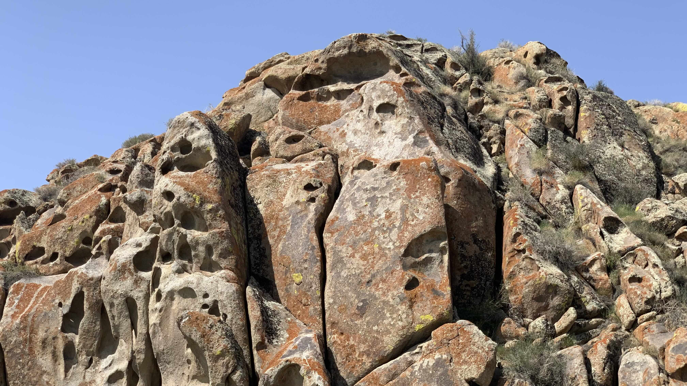
土色打底的石頭和蒙古南邊的一樣，佈滿孔洞，長著紅色、黑色、黃綠色的青苔。
較大的洞穴裡被擺放了一些物件，路上看到空的機油瓶、太陽能板、寶特瓶，視覺上和博物館展示方式有點類似。
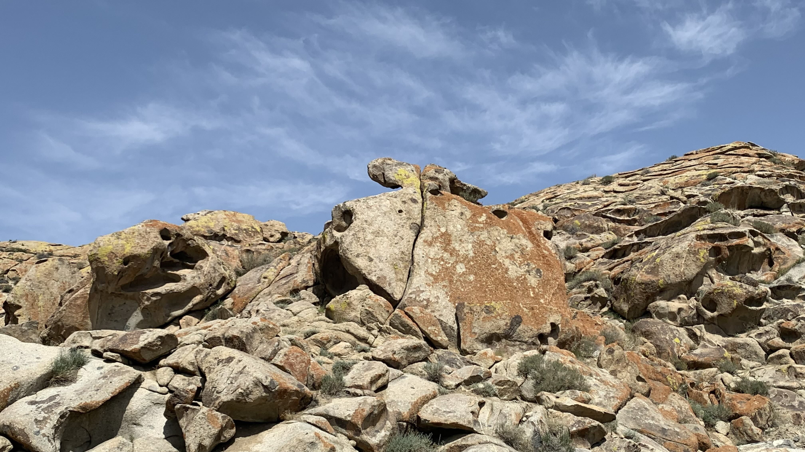
幫石頭拍了幾張照片。在蒙古時幾度想幫這種特殊色石頭拍照，但是沒有一次停下來。其中的心理差異相當微妙，最粗略地說，當時的我置身於全然的「自然」之中，而這種停下來觀看的心，需要在場所中展現一些「人」的意識，才能讓路過的人安心停下腳步。
當然，這只是我個人的經驗。也許有人在裸露的地貌騎著自行車被七級陣風吹一個多月後，仍然能保有絕佳的審美意識。
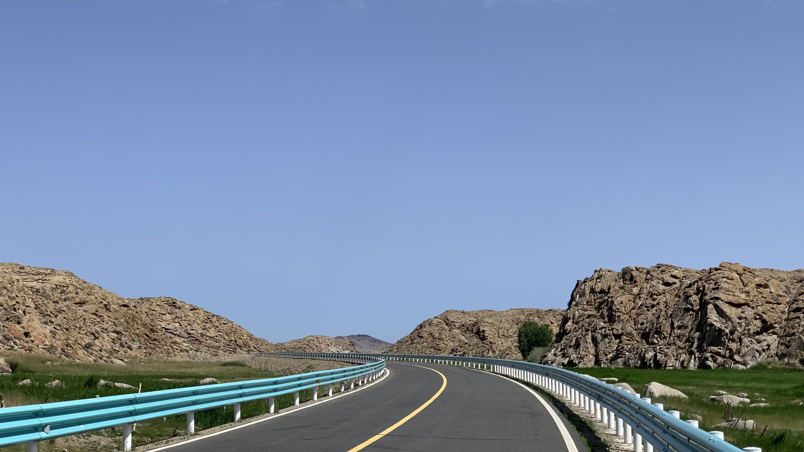
這裡太整齊了。光是乾淨的明亮配色和彎曲、筆直的人造線條與質感出現在畫面中，這種人類的秩序感就使「野生」的感覺蕩然無存了。
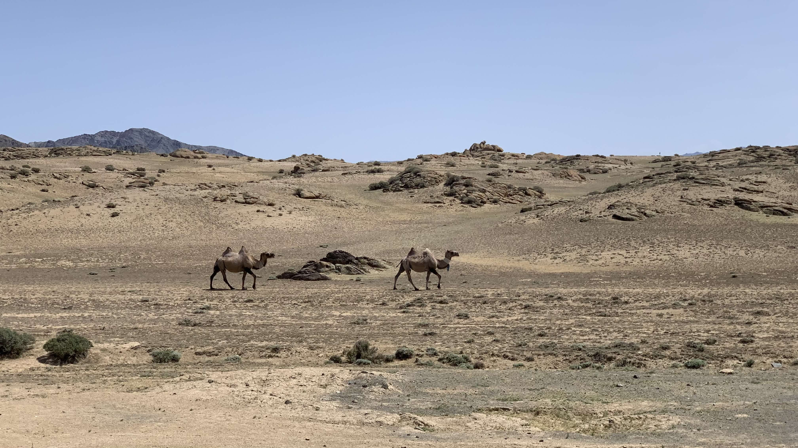
即便是駱駝，看起來都是受教化地綁著綠色絲巾。
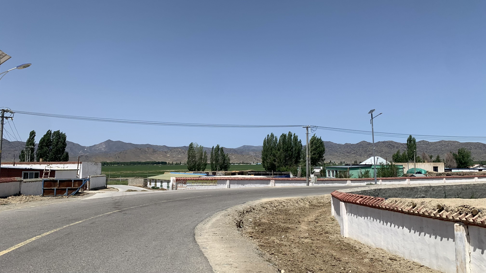
十二點多，公路上的陣風越來越強。下午一點剛好抵達進村的岔路。
此處雖是鄉村，跟兩個多月前在遼寧經過的農村完全不同。白牆搭配紅磚或藍色鐵皮，還有些石頭堆砌的土房。在高溫的夏季，搭配兩旁綠植，是相當清爽的配色。
熱得受不了，在村裡看到一家商店，立刻停車衝進門買了兩瓶冰飲料，現場就開始喝。
拿出手機裡存的石人照片給老闆，問他們有沒有見過這樣的石頭。沒想到他們都說見過，就在三道海子，只是不在圍起來的熱門石堆和鹿石旁。
哈薩克族的客人幫我打電話給山上的朋友，說等我到了之後就打這支電話，說是他介紹過去的。老闆和客人是從小一起長大的，兩人開始討論起上山的路，據聞往景區雖然只有四十多公里，但是海拔卻爬升到兩千七百多公尺，也就是短短的路程，一天內就要上升一千六百公尺。三人都說自行車可以到，就是慢一點，推車嘛。旁邊的老闆娘笑著補了一句：「你可以在山上搭帳篷。」
就這樣喝著飲料閒聊，突然聽到一句：「吃了飯再走吧。」
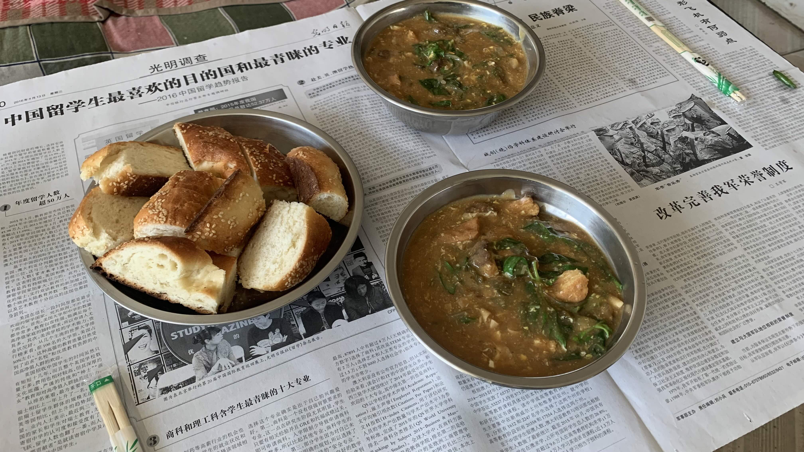
湯裡加了自家後院種的菜、豬肉、粉絲和豆乾，是魷魚羹麵的口感，非常好吃。吃飽後老闆泡了一杯茶，毫無防備喝了一大口，驚為天人。
「這茶也太好喝了吧！這是什麼茶？！」衝口而出問了這一句。
「好喝就包一些在路上喝吧。」
「你應該帶個饢，我們的是冷凍的，化了之後可以放幾天，帶著路上吃。」
老闆夫婦一言一語之間，茶和饢都打包好了。
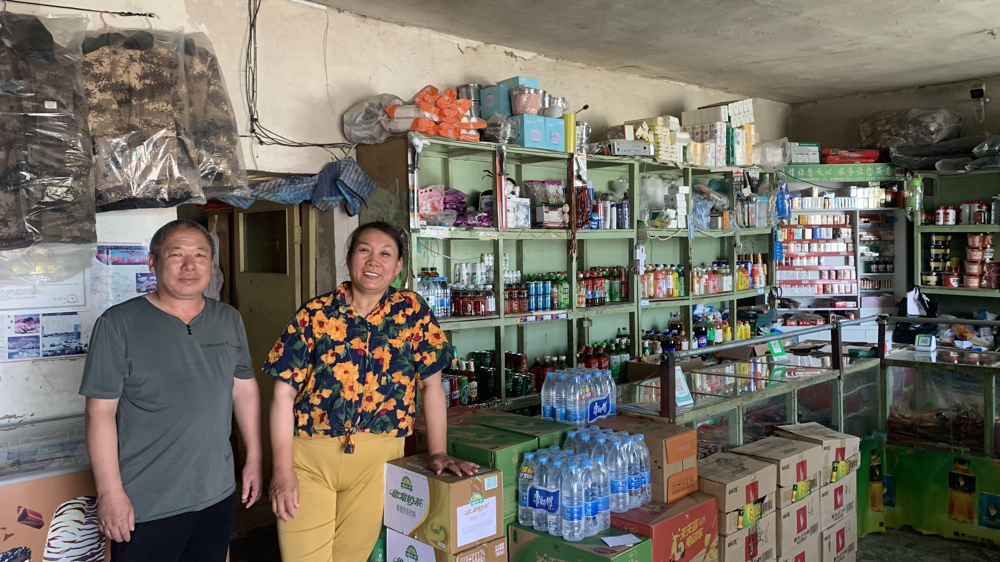
「這裡的人邀請你吃飯很正常，是看到走路騎行的才請吃飯，一般旅遊的就得算錢。」
這句話聽著十分開心，眼前的人不再因為我是台灣同胞而特別感興趣，行為的重量終於超越了邊界加諸在個體身上的定義。
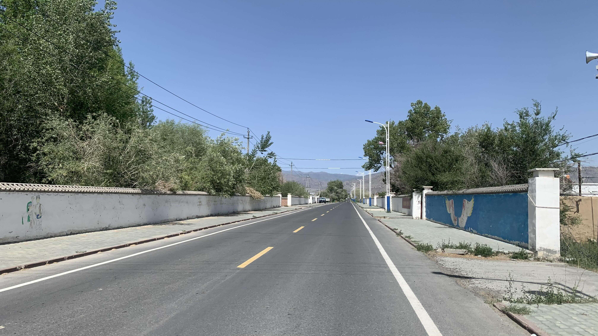
吃飽後繼續趕路，從早上就很想大便，可聽說新疆到處都是監控，不希望自己蹲在路邊的時候有人從螢幕上看著我拉屎，因此一路忍到現在。
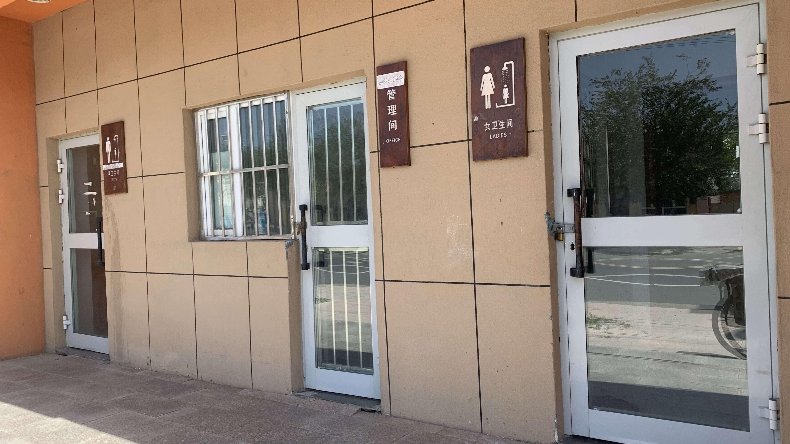
三點多抵達查干郭勒鄉，公共衛生間已經上鎖了。不死心又往前騎兩個巷口，一模一樣的另一組衛生間是開放的。
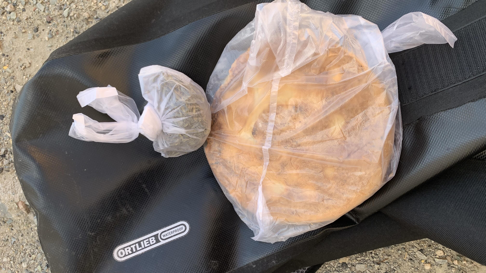
回想起遼寧的震撼，新疆的公共廁所算是乾淨的。上個廁所出來，坐墊已經熱到發燙，拿出尚未退冰的饢貼著降溫。
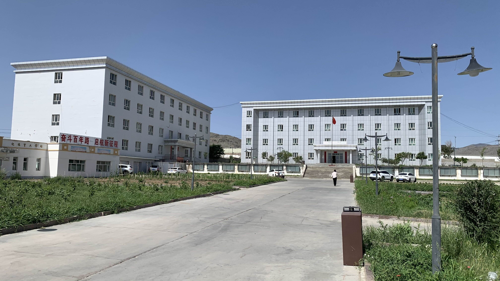
據說在鄉政府往北七百米處有兩尊石人，因此沿著導航來到辦公處，但是石人在哪？往北的山坡又在哪？
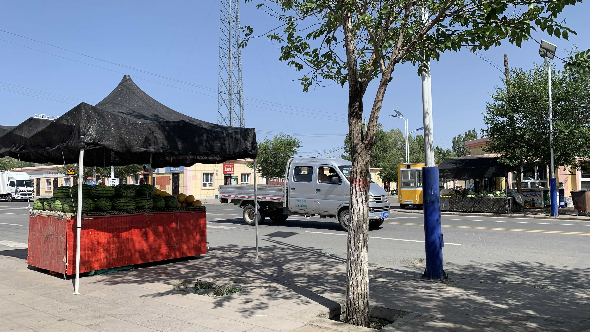
看到兩攤西瓜，好想吃。目測一個人絕對吃不完，還是循例買了一瓶飲料蹲在門口喝。超市老闆拿了椅子給我坐，聽到我要找石人，一直說那山很高騎不上去，要我去富藴那裡的景區比較好看。
雖然老闆人很好，但是不要一直勸我放棄啊。
無論如何今天是不上山了，先找住處休息吧。摸了一下單車把手，被握把的金屬燙到縮手。跨上單車後屁股像坐在鐵板燒烤盤，只好懸著屁股找酒店。
一個晚上依然是一百元，沒辦法殺價。
老闆聽說我想看石人，打電話幫我問了拿台胞證是否可以上景區，聽對話應該是沒有得到正面回應。
「不過這兩天還發布消息說邊境如果遇到什麼可疑狀況要通報，好像是針對日本來的。」老闆找了視頻給我看。
「我不就是從日本騎過來的嗎？這算是日本來的嗎？」我尷尬地說。
「沒事，我自己也是軍人退役，海陸特戰的。你也不是來做什麼奇怪的事，就是想去看石人嘛。」
「可剛才前面超商的老闆說我自行車上不去，要我往富藴。所以才問這附近的石人。」 「誰說上不去？男的女的？漢人嗎？怎麼上不去，你騎慢一點就能上去。」一句話兩個標籤，不愧是退役軍人。「等邊防那回我我再給你打電話。如果要辦證，待會我幫你找車到青河，坐過去二十塊，你先去休息。」
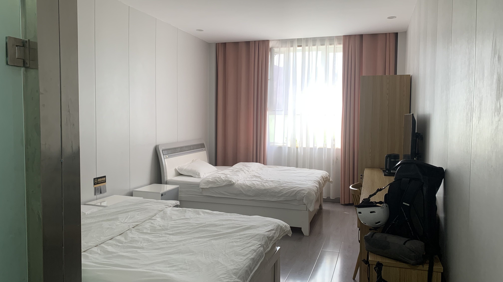
雖然不給殺價，但這房間確實乾淨整齊且大得過分。為什麼找不到便宜的住宿呢？這幾天花了好多錢，心裡著實有些不安。
晚上七點老闆打電話來，跟我說：「要不你明天上去就跟邊檢說身分證怕弄丟放家裡，是從廣州騎自行車來玩的。」看來是沒有車能帶我到青河辦證，因此打來幫忙想辦法。只是老闆，你剛剛都打電話報備有個台灣人沒有邊防證想騎自行車上山了，這建議著實不妥啊。
掛電話後想想這樣硬衝上山也是不妥，早上的公安只是允許我到青河才辦證，可沒有說我中途能轉彎到邊防山區玩耍。
思考了一陣，決定明天先到青河辦證，如果真的還想上山，那就再繞回來。目前仍維持兩個方案，一個是看完這附近的石人和鹿石就往南到烏魯木齊，另一個是繼續往西到阿勒泰，沿著山路往南走。
今日花費： 早餐 10、22、6+16、水 5、住宿 100元